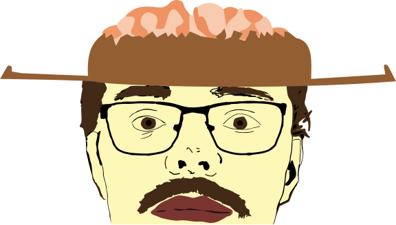

Howdy! I’m a future-ready full-stack developer with a wild passion for coding and creativity. Wrangling HTML, CSS, and JavaScript is my game, and I love crafting web applications that are as smart as they are user-friendly. Fresh out of a coding bootcamp, my journey is just beginning. When I’m not in front of a screen, you’ll find me exploring the great outdoors—paddling, biking, and soaking up the wonders of nature. With a brain like a supercomputer and a heart full of curiosity, I’m excited to ride into the tech frontier and make my mark. Let’s connect and create something amazing together!
